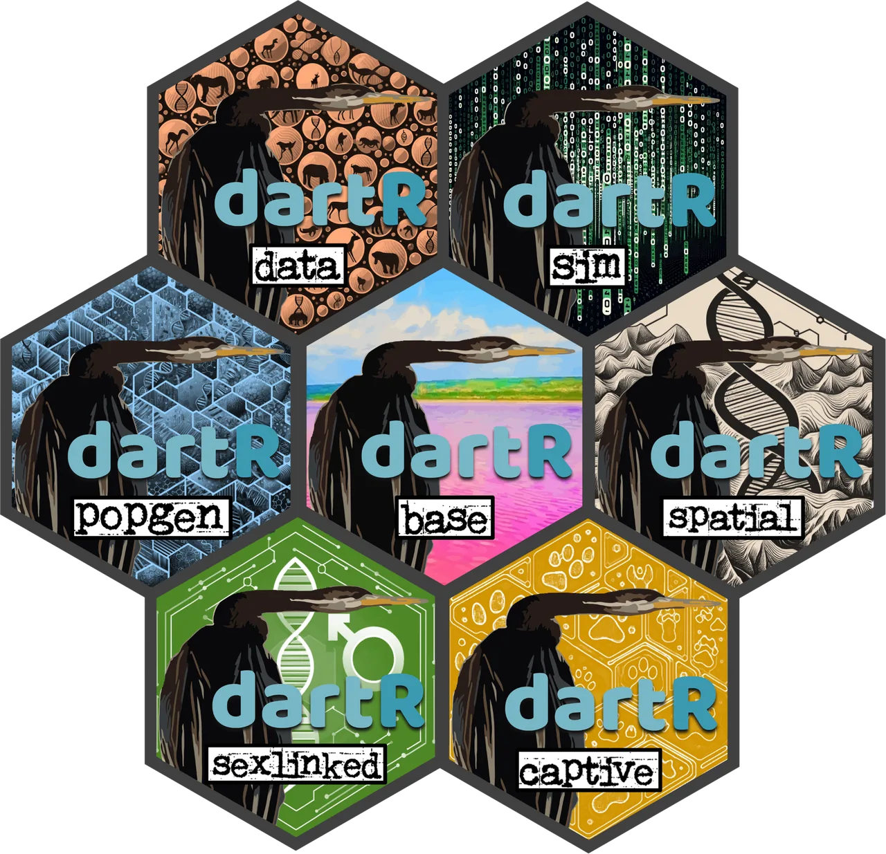

A dartRverse referencefor your AI assistant.
dartr-code gives your AI assistant a reference for the dartRverse, the R packages for population-genetic analysis of SNP data. It is a set of instructions and reference files covering all 263 functions and known pitfalls. Your assistant can check each call against it before writing your code.
For Claude Code, Codex and the ChatGPT desktop app.

# ---- how it helps ----
What the assistant can check
Function arguments and defaults
The R helper reads function arguments, defaults and documented return values from your installed packages, so the reference matches your version. If your assistant cannot run R, it can use the included reference files.
Known pitfalls
The notes cover data import, filtering, FST, heterozygosity and relatedness, as well as file-backed objects and external programs. Each note says whether the issue was tested, identified in the source code or reported by a developer.
Version differences
Some functions behave differently in CRAN releases and development versions. The skill documents bugs fixed in development and tells the assistant to check which version you're using.
# ---- pitfalls ----
Four pitfalls it covers
Each example is a call an assistant wrote. It shows what R reported, what had happened, and what the skill tells the assistant to do.
x <- gl.read.dart("Report_SNP.csv",
ind.metafile = "samples.csv",
verbose = 0)
nInd(x)
#> [1] 240samples.csv and were excluded. At the default verbosity, R mentions this in the log. With verbose = 0, it says nothing.nInd(x) with the number of samples you sent.keep <- read.csv("keep.csv") # columns: id, new_group
x <- gl.keep.ind(platypus.gl, ind.list = keep$id)
pop(x) <- keep$new_group
gl.fst.pop(x)
# pairwise FST came out as 0.004, -0.011 and -0.017gl.keep.ind() keeps individuals in the object's original order. Assigning labels in the list's order put 21 of the 30 animals in the wrong group. FST values that were between 0.052 and 0.081 fell to around zero.pop(x) <- keep$new_group[match(indNames(x), keep$id)]x <- gl.keep.pop(platypus.gl, pop.list = "TENTERFIELD")
nLoc(x)
#> [1] 1000loc.metrics$CallRate still describe the original 81 animals.recalc = TRUE, mono.rm = TRUE. That leaves 575 loci with their statistics recalculated.pc <- gl.pcoa(x, plot.display = FALSE)
#> Error in gl.pcoa(x, plot.display = FALSE) :
#> unused argument (plot.display = FALSE)plot.display, while gl.pcoa() uses plot.out. The assistant assumed they used the same name.gl.pcoa(x, plot.out = FALSE)These examples were tested with dartR.base 1.2.6 and the data included in dartR.data.
# ---- every function ----
Browse functions by task
Explore the skill's reference below. Open a group and select a function to see its arguments and defaults. The coloured dot beside each function identifies its package.
The function browser hasn't loaded. You can still find every function in the function index on GitHub.
Drag to move. Pinch, or hold Ctrl and scroll, to zoom.
263 functions in 19 groups, based on the packages' development versions.
# ---- install ----
Install it for your assistant
Choose your assistant below for installation instructions.
git clone https://github.com/mijangos81/dartr-code.git
mkdir -p ~/.claude/skills
cp -r dartr-code/skills/dartr-code ~/.claude/skills/Claude can then use the skill when you ask for dartRverse code. For a single project, copy the folder into .claude/skills/ inside that project.
git clone https://github.com/mijangos81/dartr-code.git
mkdir -p ~/.agents/skills
cp -r dartr-code/skills/dartr-code ~/.agents/skills/Codex can select the skill for dartRverse requests, or you can ask for it explicitly by typing $dartr-code in your prompt.
git clone https://github.com/mijangos81/dartr-code.gitThe repository is also a plugin. To install the cloned folder locally, follow OpenAI's instructions under “Install a local plugin manually”.
This plugin isn't listed in ChatGPT's plugin directory, so it isn't available in the browser. Uploading the folder or ZIP file to a chat doesn't install it.
On Windows, copy skills\dartr-code into the appropriate skills folder in your user directory. The lookup helper needs Rscript and the relevant dartRverse packages. Without them, the assistant uses the included reference files.
# ---- inside the repository ----
What you are installing
dartR package, and relevant ebook chapters and tutorials.